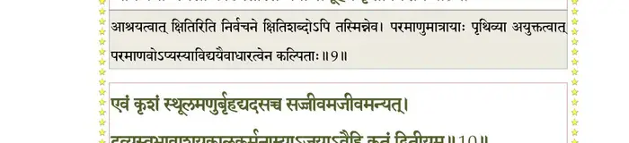
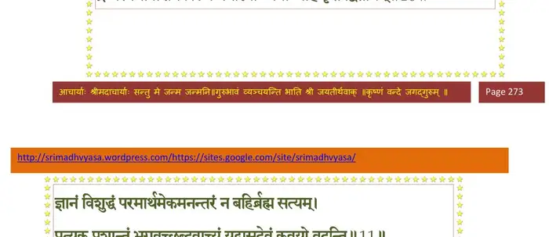
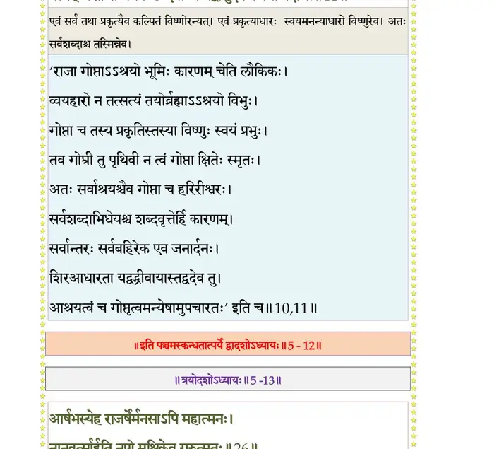

स्कन्ध 5 · अध्याय 12
श्लोक १
रहूगण उवाच–
नमो नमः कारणविग्रहाय स्वरूपतुच्छीकृतविग्रहाय ।
नमोऽवधूतद्विजबन्धुलिङ्गनिगूढनित्यानुभवाय तुभ्यम्।। १ ।।
नमो नमः कारणविग्रहाय स्वरूपतुच्छीकृतविग्रहाय ।
नमोऽवधूतद्विजबन्धुलिङ्गनिगूढनित्यानुभवाय तुभ्यम्।। १ ।।
श्लोक २
ज्वरामयार्तस्य यथागदं सन्निदाघदग्धस्य यथा हिमाम्भः ।
कुदेहमानाहिविनष्टदृष्टेर्ब्रह्मन्वचस्तेऽमृतमौषधं मे।। २ ।।
कुदेहमानाहिविनष्टदृष्टेर्ब्रह्मन्वचस्तेऽमृतमौषधं मे।। २ ।।
श्लोक ३
तस्माद्भवन्तं मम संशयार्थं पृच्छामि पश्चादधुना सुबोधम् ।
अध्यात्मयोगग्रथितं पुरोक्तमाख्याहि कौतुहलचेतसो मे।। ३ ।।
अध्यात्मयोगग्रथितं पुरोक्तमाख्याहि कौतुहलचेतसो मे।। ३ ।।
श्लोक ४
यदाह योगेश्वर दृश्यमानं क्रियाफलं सद्व्यवहारमूलम् ।
न ह्यञ्जसा तत्त्वविमर्शनाय भवानमुष्मिन्भ्रमते मनो मे।। ४ ।।
न ह्यञ्जसा तत्त्वविमर्शनाय भवानमुष्मिन्भ्रमते मनो मे।। ४ ।।
श्लोक ५
ब्राह्मण उवाच–
अयं जनो नाम चलन्पृथिव्यां यः पार्थिवः पार्थिव कस्य हेतोः ।
तस्यापि चाङ्घ्र्योरधि गुल्फजङ्घाजानूरुमध्योरशिरोधरांसाः।। ५ ।।
अयं जनो नाम चलन्पृथिव्यां यः पार्थिवः पार्थिव कस्य हेतोः ।
तस्यापि चाङ्घ्र्योरधि गुल्फजङ्घाजानूरुमध्योरशिरोधरांसाः।। ५ ।।
श्लोक ६
अंसे च दार्वी शिबिका च यस्यां सौवीरराजेत्यपदेश आस्ते ।
यस्मिन्भवान् रूढनिजाभिमानो राजाऽस्मि सिन्धुष्विति दुर्मदान्धः ।। ६ ।।
यस्मिन्भवान् रूढनिजाभिमानो राजाऽस्मि सिन्धुष्विति दुर्मदान्धः ।। ६ ।।
श्लोक ७
शोच्यानिमांस्तानधिकस्तवाधिं विष्ट्या निगृह्णन्निरनुग्रहोऽसि ।
जनस्य गोप्तेति विकत्थमानो न शोऽभसे वृद्धसभासु दुष्टः।। ७ ।।
जनस्य गोप्तेति विकत्थमानो न शोऽभसे वृद्धसभासु दुष्टः।। ७ ।।
भागवततात्पर्यनिर्णय
श्लोक ८
यदि क्षितावेव चराचरस्य विदाम निष्ठां प्रभवं च नित्यम् ।
तन्नामतोऽन्यद्व्यवहारमात्रं निरूप्यतां तत्क्रिययाऽनुतिष्ठन् ।। ८ ।।
तन्नामतोऽन्यद्व्यवहारमात्रं निरूप्यतां तत्क्रिययाऽनुतिष्ठन् ।। ८ ।।
श्लोक ९
एवं निरुक्तं क्षितिशब्दवृत्तमसन्निधानं परमाणवो ये ।
अविद्यया मनसा कल्पितास्ते येषां समूहेन कृतो विशेषः।। ९ ।।
अविद्यया मनसा कल्पितास्ते येषां समूहेन कृतो विशेषः।। ९ ।।
भागवततात्पर्यनिर्णय

श्लोक १०
एवं कृशं स्थूलमणुर्बृहृहृद्यदसच्च सज्जीवमजीवमन्यत् ।
द्रव्यस्वभावाशयकालकर्मनाम््नयाऽजयाऽवैहि कृतं द्वितीयम्।। १० ।।
द्रव्यस्वभावाशयकालकर्मनाम््नयाऽजयाऽवैहि कृतं द्वितीयम्।। १० ।।
भागवततात्पर्यनिर्णय

श्लोक ११
ज्ञानं विशुद्धं परमार्थमेकमनन्तरं न बहिर्ब्रह्म सत्यम् ।
प्रत्यक् प्रशान्तं भगवच्छब्दवाच्यं यद्वासुदेवं कवयो वदन्ति।। ११ ।।
प्रत्यक् प्रशान्तं भगवच्छब्दवाच्यं यद्वासुदेवं कवयो वदन्ति।। ११ ।।
भागवततात्पर्यनिर्णय

श्लोक १२
रहूगणैतत्तपसा न याति न विद्यया निर्वसनाद्गृहाद्वा ।
न छन्दसा नोत जलाग्निसूर्यैर्विना महत्पादरजोभिषेकम्।। १२ ।।
न छन्दसा नोत जलाग्निसूर्यैर्विना महत्पादरजोभिषेकम्।। १२ ।।
श्लोक १३
यत्रोत्तमश्लोकगुणानुवादः प्रस्तूयते ग्राम्यकथाविघातः ।
निषेव्यमाणोऽनुदिनं मुमुक्षोर्मतिं सती यच्छति वासुदेवे।। १३ ।।
निषेव्यमाणोऽनुदिनं मुमुक्षोर्मतिं सती यच्छति वासुदेवे।। १३ ।।
श्लोक १४
अहं पुरा भरतो नाम राजा विमुक्तदृष्टश्रुतसङ्गबन्धः ।
आराधनं भगवत ईहमानो मृगोऽभवं मृगसङ्गाद्धतार्थः।। १४ ।।
आराधनं भगवत ईहमानो मृगोऽभवं मृगसङ्गाद्धतार्थः।। १४ ।।
श्लोक १५
सा मां स्मृतिर्मृगदेहेऽपि वीर कृष्णार्चनप्रभवा नो जहाति ।
अथो अहं जनसङ्गाद्विमुक्तो विशङ्कमानोऽविकृतश्चरामि।। १५ ।।
अथो अहं जनसङ्गाद्विमुक्तो विशङ्कमानोऽविकृतश्चरामि।। १५ ।।
श्लोक १६
तस्मान्नरोऽसङ्गसुसङ्गजातज्ञानासिनैवेह विवृक्णसङ्गः ।
हरिं तदीहाकथनश्रुतिभ्यां लब्धस्मृतिर्यात्यतिपारमध्वनः।। १६ ।।
हरिं तदीहाकथनश्रुतिभ्यां लब्धस्मृतिर्यात्यतिपारमध्वनः।। १६ ।।
।। इति श्रीमद्भागवते पञ्चमस्कन्धे द्वादशोऽध्यायः ।।